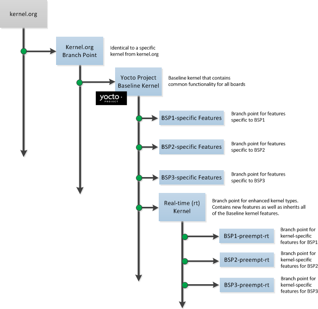
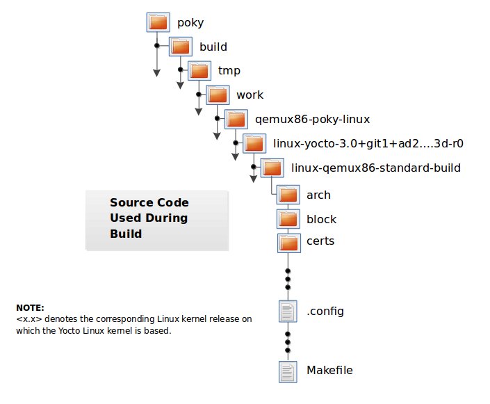

4 Advanced Kernel Concepts
4.1 Yocto Project Kernel Development and Maintenance
Kernels available through the Yocto Project (Yocto Linux kernels), like
other kernels, are based off the Linux kernel releases from
https://www.kernel.org. At the beginning of a major Linux kernel
development cycle, the Yocto Project team chooses a Linux kernel based
on factors such as release timing, the anticipated release timing of
final upstream kernel.org versions, and Yocto Project feature
requirements. Typically, the Linux kernel chosen is in the final stages
of development by the Linux community. In other words, the Linux kernel
is in the release candidate or "rc" phase and has yet to reach final
release. But, by being in the final stages of external development, the
team knows that the kernel.org final release will clearly be within
the early stages of the Yocto Project development window.
This balance allows the Yocto Project team to deliver the most up-to-date Yocto Linux kernel possible, while still ensuring that the team has a stable official release for the baseline Linux kernel version.
As implied earlier, the ultimate source for Yocto Linux kernels are
released kernels from kernel.org. In addition to a foundational
kernel from kernel.org, the available Yocto Linux kernels contain a
mix of important new mainline developments, non-mainline developments
(when no alternative exists), Board Support Package (BSP) developments,
and custom features. These additions result in a commercially released
Yocto Project Linux kernel that caters to specific embedded designer
needs for targeted hardware.
You can find a web interface to the Yocto Linux kernels in the I Repository del Codice Sorgente di Yocto Project at https://git.yoctoproject.org/. If you look at the interface, you will see to the left a grouping of Git repositories titled "Yocto Linux Kernel". Within this group, you will find several Linux Yocto kernels developed and included with Yocto Project releases:
linux-yocto-4.1: The stable Yocto Project kernel to use with the Yocto Project Release 2.0. This kernel is based on the Linux 4.1 released kernel.
linux-yocto-4.4: The stable Yocto Project kernel to use with the Yocto Project Release 2.1. This kernel is based on the Linux 4.4 released kernel.
linux-yocto-4.6: A temporary kernel that is not tied to any Yocto Project release.
linux-yocto-4.8: The stable yocto Project kernel to use with the Yocto Project Release 2.2.
linux-yocto-4.9: The stable Yocto Project kernel to use with the Yocto Project Release 2.3. This kernel is based on the Linux 4.9 released kernel.
linux-yocto-4.10: The default stable Yocto Project kernel to use with the Yocto Project Release 2.3. This kernel is based on the Linux 4.10 released kernel.
linux-yocto-4.12: The default stable Yocto Project kernel to use with the Yocto Project Release 2.4. This kernel is based on the Linux 4.12 released kernel.
yocto-kernel-cache: The
linux-yocto-cachecontains patches and configurations for the linux-yocto kernel tree. This repository is useful when working on the linux-yocto kernel. For more information on this "Advanced Kernel Metadata", see the "Working with Advanced Metadata (yocto-kernel-cache)" Chapter.linux-yocto-dev: A development kernel based on the latest upstream release candidate available.
Once a Yocto Linux kernel is officially released, the Yocto Project team goes into their next development cycle, or upward revision (uprev) cycle, while still continuing maintenance on the released kernel. It is important to note that the most sustainable and stable way to include feature development upstream is through a kernel uprev process. Back-porting hundreds of individual fixes and minor features from various kernel versions is not sustainable and can easily compromise quality.
During the uprev cycle, the Yocto Project team uses an ongoing analysis
of Linux kernel development, BSP support, and release timing to select
the best possible kernel.org Linux kernel version on which to base
subsequent Yocto Linux kernel development. The team continually monitors
Linux community kernel development to look for significant features of
interest. The team does consider back-porting large features if they
have a significant advantage. User or community demand can also trigger
a back-port or creation of new functionality in the Yocto Project
baseline kernel during the uprev cycle.
Generally speaking, every new Linux kernel both adds features and introduces new bugs. These consequences are the basic properties of upstream Linux kernel development and are managed by the Yocto Project team's Yocto Linux kernel development strategy. It is the Yocto Project team's policy to not back-port minor features to the released Yocto Linux kernel. They only consider back-porting significant technological jumps --- and, that is done after a complete gap analysis. The reason for this policy is that back-porting any small to medium sized change from an evolving Linux kernel can easily create mismatches, incompatibilities and very subtle errors.
The policies described in this section result in both a stable and a cutting edge Yocto Linux kernel that mixes forward ports of existing Linux kernel features and significant and critical new functionality. Forward porting Linux kernel functionality into the Yocto Linux kernels available through the Yocto Project can be thought of as a "micro uprev". The many "micro uprevs" produce a Yocto Linux kernel version with a mix of important new mainline, non-mainline, BSP developments and feature integrations. This Yocto Linux kernel gives insight into new features and allows focused amounts of testing to be done on the kernel, which prevents surprises when selecting the next major uprev. The quality of these cutting edge Yocto Linux kernels is evolving and the kernels are used in leading edge feature and BSP development.
4.2 Yocto Linux Kernel Architecture and Branching Strategies
As mentioned earlier, a key goal of the Yocto Project is to present the
developer with a kernel that has a clear and continuous history that is
visible to the user. The architecture and mechanisms, in particular the
branching strategies, used achieve that goal in a manner similar to
upstream Linux kernel development in kernel.org.
You can think of a Yocto Linux kernel as consisting of a baseline Linux kernel with added features logically structured on top of the baseline. The features are tagged and organized by way of a branching strategy implemented by the Yocto Project team using the Source Code Manager (SCM) Git.
Nota
Git is the obvious SCM for meeting the Yocto Linux kernel organizational and structural goals described in this section. Not only is Git the SCM for Linux kernel development in
kernel.orgbut, Git continues to grow in popularity and supports many different work flows, front-ends and management techniques.You can find documentation on Git at https://git-scm.com/doc. You can also get an introduction to Git as it applies to the Yocto Project in the "Git" section in the Yocto Project Overview and Concepts Manual. The latter reference provides an overview of Git and presents a minimal set of Git commands that allows you to be functional using Git. You can use as much, or as little, of what Git has to offer to accomplish what you need for your project. You do not have to be a "Git Expert" in order to use it with the Yocto Project.
Using Git's tagging and branching features, the Yocto Project team creates kernel branches at points where functionality is no longer shared and thus, needs to be isolated. For example, board-specific incompatibilities would require different functionality and would require a branch to separate the features. Likewise, for specific kernel features, the same branching strategy is used.
This "tree-like" architecture results in a structure that has features organized to be specific for particular functionality, single kernel types, or a subset of kernel types. Thus, the user has the ability to see the added features and the commits that make up those features. In addition to being able to see added features, the user can also view the history of what made up the baseline Linux kernel.
Another consequence of this strategy results in not having to store the same feature twice internally in the tree. Rather, the kernel team stores the unique differences required to apply the feature onto the kernel type in question.
Nota
The Yocto Project team strives to place features in the tree such that features can be shared by all boards and kernel types where possible. However, during development cycles or when large features are merged, the team cannot always follow this practice. In those cases, the team uses isolated branches to merge features.
BSP-specific code additions are handled in a similar manner to kernel-specific additions. Some BSPs only make sense given certain kernel types. So, for these types, the team creates branches off the end of that kernel type for all of the BSPs that are supported on that kernel type. From the perspective of the tools that create the BSP branch, the BSP is really no different than a feature. Consequently, the same branching strategy applies to BSPs as it does to kernel features. So again, rather than store the BSP twice, the team only stores the unique differences for the BSP across the supported multiple kernels.
While this strategy can result in a tree with a significant number of
branches, it is important to realize that from the developer's point of
view, there is a linear path that travels from the baseline
kernel.org, through a select group of features and ends with their
BSP-specific commits. In other words, the divisions of the kernel are
transparent and are not relevant to the developer on a day-to-day basis.
From the developer's perspective, this path is the development branch.
The developer does not need to be aware of the existence of
any other branches at all. Of course, it can make sense to have these
branches in the tree, should a person decide to explore them. For
example, a comparison between two BSPs at either the commit level or at
the line-by-line code diff level is now a trivial operation.
The following illustration shows the conceptual Yocto Linux kernel.


In the illustration, the "Kernel.org Branch Point" marks the specific spot (or Linux kernel release) from which the Yocto Linux kernel is created. From this point forward in the tree, features and differences are organized and tagged.
The "Yocto Project Baseline Kernel" contains functionality that is common to every kernel type and BSP that is organized further along in the tree. Placing these common features in the tree this way means features do not have to be duplicated along individual branches of the tree structure.
From the "Yocto Project Baseline Kernel", branch points represent specific functionality for individual Board Support Packages (BSPs) as well as real-time kernels. The illustration represents this through three BSP-specific branches and a real-time kernel branch. Each branch represents some unique functionality for the BSP or for a real-time Yocto Linux kernel.
In this example structure, the "Real-time (rt) Kernel" branch has common features for all real-time Yocto Linux kernels and contains more branches for individual BSP-specific real-time kernels. The illustration shows three branches as an example. Each branch points the way to specific, unique features for a respective real-time kernel as they apply to a given BSP.
The resulting tree structure presents a clear path of markers (or branches) to the developer that, for all practical purposes, is the Yocto Linux kernel needed for any given set of requirements.
Nota
Keep in mind the figure does not take into account all the supported Yocto Linux kernels, but rather shows a single generic kernel just for conceptual purposes. Also keep in mind that this structure represents the I Repository del Codice Sorgente di Yocto Project that are either pulled from during the build or established on the host development system prior to the build by either cloning a particular kernel's Git repository or by downloading and unpacking a tarball.
Working with the kernel as a structured tree follows recognized community best practices. In particular, the kernel as shipped with the product, should be considered an "upstream source" and viewed as a series of historical and documented modifications (commits). These modifications represent the development and stabilization done by the Yocto Project kernel development team.
Because commits only change at significant release points in the product life cycle, developers can work on a branch created from the last relevant commit in the shipped Yocto Project Linux kernel. As mentioned previously, the structure is transparent to the developer because the kernel tree is left in this state after cloning and building the kernel.
4.3 Kernel Build File Hierarchy
Upstream storage of all the available kernel source code is one thing, while representing and using the code on your host development system is another. Conceptually, you can think of the kernel source repositories as all the source files necessary for all the supported Yocto Linux kernels. As a developer, you are just interested in the source files for the kernel on which you are working. And, furthermore, you need them available on your host system.
Kernel source code is available on your host system several different ways:
Files Accessed While using devtool:
devtool, which is available with the Yocto Project, is the preferred method by which to modify the kernel. See the "Kernel Modification Workflow" section.Cloned Repository: If you are working in the kernel all the time, you probably would want to set up your own local Git repository of the Yocto Linux kernel tree. For information on how to clone a Yocto Linux kernel Git repository, see the "Preparazione dell'Host di Build per Lavorare sul Kernel." section.
Temporary Source Files from a Build: If you just need to make some patches to the kernel using a traditional BitBake workflow (i.e. not using the
devtool), you can access temporary kernel source files that were extracted and used during a kernel build.
The temporary kernel source files resulting from a build using BitBake have a particular hierarchy. When you build the kernel on your development system, all files needed for the build are taken from the source repositories pointed to by the SRC_URI variable and gathered in a temporary work area where they are subsequently used to create the unique kernel. Thus, in a sense, the process constructs a local source tree specific to your kernel from which to generate the new kernel image.
The following figure shows the temporary file structure created on your host system when you build the kernel using BitBake. This Build Directory contains all the source files used during the build.


Again, for additional information on the Yocto Project kernel's architecture and its branching strategy, see the "Yocto Linux Kernel Architecture and Branching Strategies" section. You can also reference the "Using devtool to Patch the Kernel" and "Using Traditional Kernel Development to Patch the Kernel" sections for detailed example that modifies the kernel.
4.4 Determining Hardware and Non-Hardware Features for the Kernel Configuration Audit Phase
This section describes part of the kernel configuration audit phase that
most developers can ignore. For general information on kernel
configuration including menuconfig, defconfig files, and
configuration fragments, see the
"Configuring the Kernel" section.
During this part of the audit phase, the contents of the final
.config file are compared against the fragments specified by the
system. These fragments can be system fragments, distro fragments, or
user-specified configuration elements. Regardless of their origin, the
OpenEmbedded build system warns the user if a specific option is not
included in the final kernel configuration.
By default, in order to not overwhelm the user with configuration warnings, the system only reports missing "hardware" options as they could result in a boot failure or indicate that important hardware is not available.
To determine whether or not a given option is "hardware" or
"non-hardware", the kernel Metadata in yocto-kernel-cache contains
files that classify individual or groups of options as either hardware
or non-hardware. To better show this, consider a situation where the
yocto-kernel-cache contains the following files:
yocto-kernel-cache/features/drm-psb/hardware.cfg
yocto-kernel-cache/features/kgdb/hardware.cfg
yocto-kernel-cache/ktypes/base/hardware.cfg
yocto-kernel-cache/bsp/mti-malta32/hardware.cfg
yocto-kernel-cache/bsp/qemu-ppc32/hardware.cfg
yocto-kernel-cache/bsp/qemuarma9/hardware.cfg
yocto-kernel-cache/bsp/mti-malta64/hardware.cfg
yocto-kernel-cache/bsp/arm-versatile-926ejs/hardware.cfg
yocto-kernel-cache/bsp/common-pc/hardware.cfg
yocto-kernel-cache/bsp/common-pc-64/hardware.cfg
yocto-kernel-cache/features/rfkill/non-hardware.cfg
yocto-kernel-cache/ktypes/base/non-hardware.cfg
yocto-kernel-cache/features/aufs/non-hardware.kcf
yocto-kernel-cache/features/ocf/non-hardware.kcf
yocto-kernel-cache/ktypes/base/non-hardware.kcf
yocto-kernel-cache/ktypes/base/hardware.kcf
yocto-kernel-cache/bsp/qemu-ppc32/hardware.kcf
Here are explanations for the various files:
hardware.kcf: Specifies a list of kernel Kconfig files that contain hardware options only.non-hardware.kcf: Specifies a list of kernel Kconfig files that contain non-hardware options only.hardware.cfg: Specifies a list of kernelCONFIG_options that are hardware, regardless of whether or not they are within a Kconfig file specified by a hardware or non-hardware Kconfig file (i.e.hardware.kcfornon-hardware.kcf).non-hardware.cfg: Specifies a list of kernelCONFIG_options that are not hardware, regardless of whether or not they are within a Kconfig file specified by a hardware or non-hardware Kconfig file (i.e.hardware.kcfornon-hardware.kcf).
Here is a specific example using the
kernel-cache/bsp/mti-malta32/hardware.cfg:
CONFIG_SERIAL_8250
CONFIG_SERIAL_8250_CONSOLE
CONFIG_SERIAL_8250_NR_UARTS
CONFIG_SERIAL_8250_PCI
CONFIG_SERIAL_CORE
CONFIG_SERIAL_CORE_CONSOLE
CONFIG_VGA_ARB
The kernel configuration audit automatically detects
these files (hence the names must be exactly the ones discussed here),
and uses them as inputs when generating warnings about the final
.config file.
A user-specified kernel Metadata repository, or recipe space feature,
can use these same files to classify options that are found within its
.cfg files as hardware or non-hardware, to prevent the OpenEmbedded
build system from producing an error or warning when an option is not in
the final .config file.